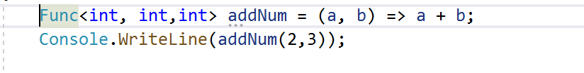

In this blog we will address 2 issues. 1) How to reuse HTML code so that we comply with DRY coding standard. BTW if you are wondering what DRY is then it means - Don't Repeat Yourself. 2) How to use jQuery templating engine to generate HTML Code dynamically
Like mentioned about, if we reuse HTML code we will comply with DRY. In the process of compyling with DRY we are also making sure that our HTML code becomes more manageable and readable.Over a period of time you might have noticed that your HTML code becomes big enough and tough to manage.That is where you can start thinking about how you can reuse HTML code. What better than an eg. Consider there is a web application with one html page(index.html). It has a standard Header, Body and a Footer. Now the boss comes and says that everything looks good but the background-colorfooter has changed? Or maybe you no longer like the navigation hover color of #BADA55 and you find yourself having to go into every single file to change it to a more delicate color of developer to update part of a header.Easy can be quickyl done.Now assume we had 10 other pages with same header and footer. Now if there is a change in header/footer then we are talking about 10 different pages. More work and also more prone to error. Imagine as the app grows there woule be more html files and that also means lot of files to change. That is where it is handy to make header/footer generic code.Create header and footer in its own HTML file /*https://medium.com/@AmyScript/how-to-reduce-reuse-and-recycle-your-code-389e6742e4ac*/
Identifsy the code which can be extracted out into it's own file. Here we have header of index.html which is nothing but nav bar.Code for navbar is below. this is the section of code which forms the header of inde.thml(as shown in above image)
https://www.codereadability.com/constructing-html-with-templates/
<div class="navbar-header">
<button type="button" class="navbar-toggle collapsed"
data-toggle="collapse" data-target="#navbar">
<span class="sr-only">Toggle navigation</span>
<span class="icon-bar"></span>
<span class="icon-bar"></span>
<span class="icon-bar"></span>
</button>
<a class="navbar-brand" href="#">My Dummy Project</a>
</div>
<div id="navbar" class="navbar-collapse collapse">
<ul class="nav navbar-nav">
<li class="active"><a href="#">Home</a></li>
<li><a href="#">About</a></li>
<li><a href="#">Contact</a></li>
</ul>
</div><!--/.nav-collapse -->
Ensure that you have jquery referenced. you can download jquery here
Below is the index.html and the one in red circle is what is generic header.We want to move the header in it's own file so that it can be reused
The header is basically a standard nav bar and code for wich is below